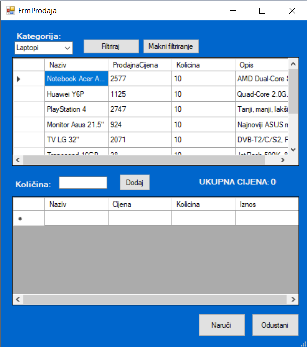
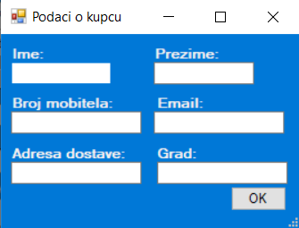

Pritiskom na gumb "Izvrši kupovinu" dolazimo do prozora koji ima dva prikaza. Gornji prikaz sadrži katalog svih proizvoda koje trgovina nudi, a donji prikaz sadrži one proizvode koje planirate kupiti. Kako biste kupili proizvod, prvo ga morate odabrati iz kataloga tako da na njega kliknete, zatim upišete željenu količinu te pritisnete "Dodaj". Ako želite naći specifičan proizvod koji pripada određenoj kategoriji, pri vrhu prozora postoji popis kategorija, uz gumbe "Filtriraj", koji primjenjuje zadane kriterije, i "Makni filtriranje", koji poništava te kriterije.
Kada ste zadovoljni Vašim popisom proizvoda, pritisnite gumb "Naruči". Otvorit će Vam se novi prozor, unutar kojega morate unijeti podatke koji su nam potrebni kako bi Vaša dostava mogla uspješno stići.
Nakon unošenja tih podataka, Vaša narudžba je zaprimljena!